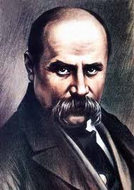

Т.Г.Шевченко
Український поет
Т.Г.Шевченко
Український поет
Головна
Поеми
Вірші

У 1861 році Тарас Григорович за власні кошти видав перший в Україні «Буквар». Книга вийшла накладом у 10 тис. примірників і була призначена для вивчення грамоти у безкоштовних школах.
Поціновувачі та дослідники біографії поета дійшли висновку, що за життя Тарас Григорович був великим модником. У своїх особистих мемуарах «батько» українського народу висловив захват стосовно купівлі нового плаща-макінтоша, вартістю 100 рублів. До слова, коли Шевченко працював в археологічній комісії, його зарплата становила 150 рублів на рік.
Про кохання в житті Тараса Шевченка розповідають багато. Зокрема те, що протягом декількох десятків років його не полишало бажання одружитися та мати сім?ю. Останнім захопленням і претенденткою на роль дружини митця була 20-річна Ликера Полусмак. На той час поету виповнилось 46. Шлюб не склався, і офіційних версій цьому декілька. Одна з найімовірніших – груба селянка Ликера не відповідала тонкій і чуттєвій душі Шевченка.